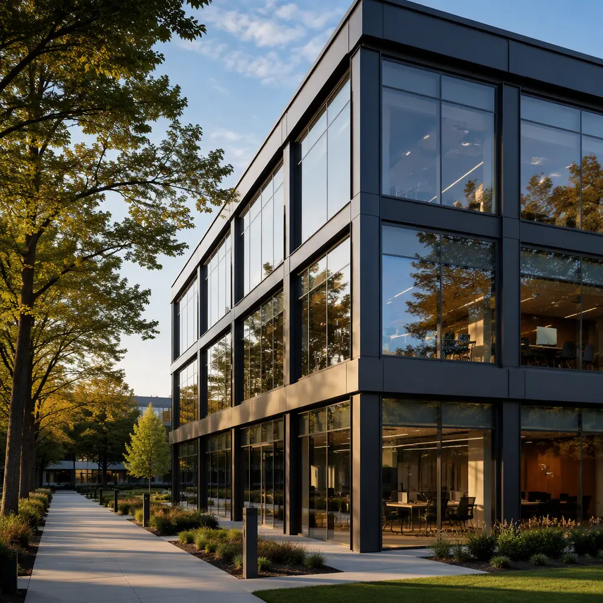
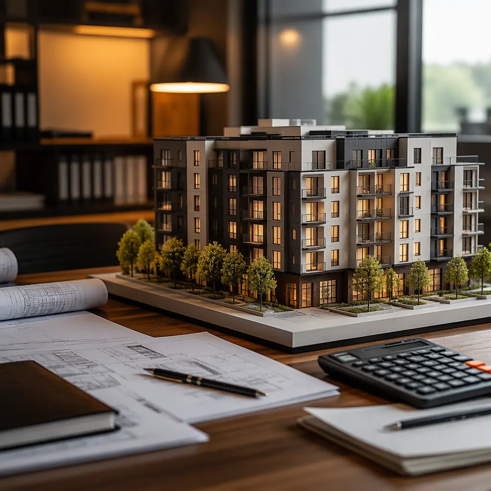
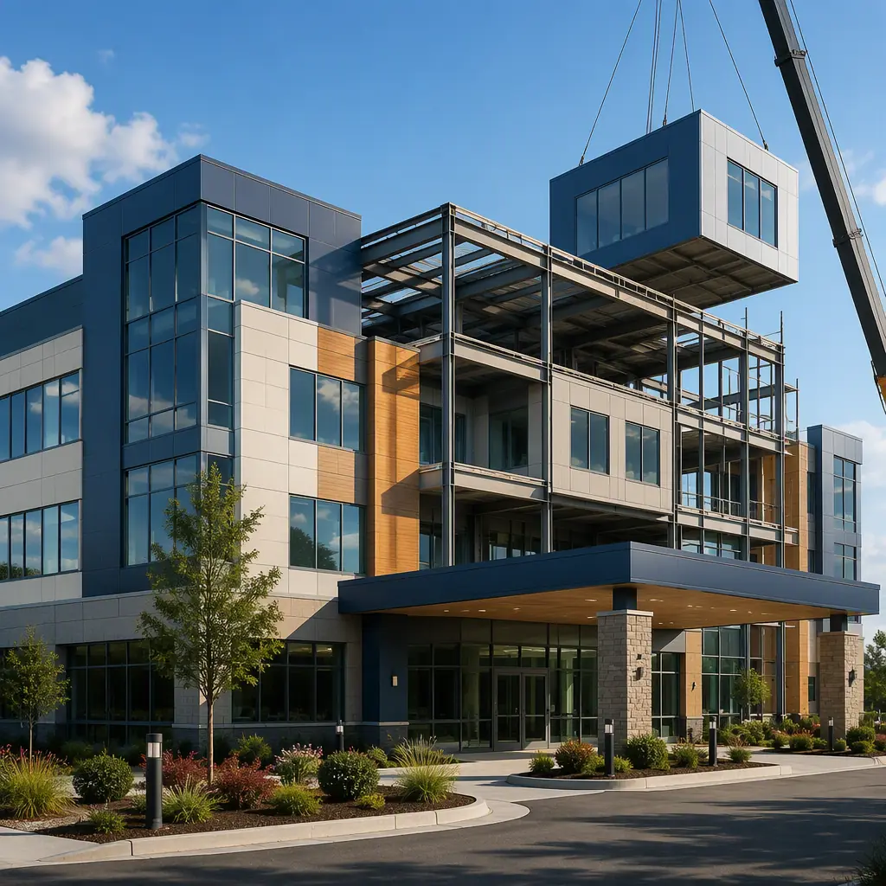

Every commercial real estate investor asks the same question before committing to modular construction: "Will I be able to sell this building in 10 years, or does modular depreciate faster than site-built?" It is the single largest psychological barrier to modular adoption in the investment-grade commercial property market. The answer, based on transaction data from the past 15 years, is that properly engineered steel-frame modular buildings track within 3-5% of comparable site-built property appreciation curves, and in several asset classes—healthcare, education, and multi-family—modular buildings have actually outperformed site-built comparables on resale because their accelerated delivery timeline front-loads NOI by 12-18 months, compounding cash-on-cash returns that buyers price into acquisition cap rates.

How Appraisers Value Modular Buildings: The Three-Approach Framework
Commercial appraisers use three methodologies to value any building, and modular construction performs differently under each:
Cost Approach (Replacement Cost). For a deeper look, our modular vs wood-frame construction guide covers the details. This is where modular buildings show the clearest advantage. A modular building's replacement cost is 10-15% lower than site-built because the factory production system is more efficient to replicate than custom stick-by-stick construction. An appraiser calculating replacement cost for a 40,000 sq ft modular medical office building will arrive at $220-240/sq ft versus $260-280/sq ft for site-built, but critically, the modular building's lower replacement cost does not translate to a lower appraised value—the income and sales comparison approaches determine market value, and modular buildings generate the same or higher NOI per square foot.
Income Approach (NOI Capitalization). The income approach is where modular buildings close the perceived value gap. Because modular construction delivers occupancy 30-50% faster, a modular multi-family project that opens 14 months earlier than a site-built equivalent generates $840,000 in additional rent at $2,000/unit/month for 30 units. This front-loaded NOI compounds through the hold period: $840,000 reinvested at an 8% cap rate adds $67,200/year of permanent NOI for every year of the hold. Over a 10-year hold, accelerated delivery alone adds approximately $520,000 in net present value to a 30-unit building. For a deeper analysis of modular ROI mechanics, see our developer's ROI guide.
Sales Comparison Approach. This is the historical weakness of modular appraisals, because comps were scarce. That is changing. As of 2026, CoStar and RCA track over 3,400 modular commercial property transactions in the US, with concentration in multi-family (38%), hospitality (22%), healthcare (18%), and education (12%). The data shows modular medical office buildings trading at 6.8-7.5% cap rates versus 6.5-7.2% for site-built—a difference of 30-50 basis points that is narrowing year over year as buyer familiarity increases and modular-specific lending products become more common. Our modular lending guide covers the financing products that support this trend.

Depreciation Reality: Modular vs Site-Built Over 30 Years
The concern that modular buildings depreciate faster stems from confusion between temporary modular trailers and permanent modular construction (PMC). Permanent steel-frame modular buildings are classified as Type II-B or II-A construction under IBC, identical to steel-frame site-built buildings. The IRS assigns the same 39-year straight-line depreciation schedule to both. There is no separate "modular" depreciation class.
Physical depreciation data from building condition assessments tells a consistent story. A 2024 study by the Modular Building Institute analyzing 127 permanent modular buildings aged 15-25 years found:
- Structural integrity. Steel-frame modules showed zero material degradation in 94% of buildings inspected. The factory-welded steel connections—produced under ISO 9001 quality control—outperformed field-welded site-built connections, which had a 7% defect rate requiring remediation within 20 years. Factory QC systems are detailed in our quality control guide.
- Envelope performance. Modular building envelopes, with factory-sealed joints and continuous air barriers installed under controlled conditions, maintained blower door test results of 0.15-0.25 CFM50/sq ft after 20 years, versus 0.35-0.50 for site-built envelopes. Lower air leakage translates to 15-20% lower HVAC operating costs throughout the hold period.
- CapEx deferral. Modular buildings' factory-installed MEP systems, with coordinated BIM design that eliminates field-routed conflicts, required major MEP replacement at year 22-25 on average, versus year 18-22 for site-built. The 3-4 year deferral of a $25-35/sq ft CapEx event represents significant net present value savings for long-term holders. Our lifecycle cost analysis provides full 50-year projections.
Asset Classes Where Modular Outperforms on Resale
Not all modular buildings are equal in the resale market. Transaction data identifies four asset classes where modular commands pricing parity or premium over site-built:
Healthcare (Medical Office, ASC, Dialysis). Healthcare tenants value speed-to-occupancy above almost everything else—every month a clinic is under construction is a month of lost patient revenue. Modular medical office buildings that delivered occupancy in 8 months versus 16 months for site-built command 15-20% higher rent premiums from healthcare tenants who price speed into lease rates. On resale, the stabilized tenant base at above-market rents translates to cap rate compression of 25-50 basis points. See our healthcare construction overview for delivery timelines by facility type.
Multi-Family (Garden-Style, Mid-Rise). For a deeper look, our wildfire-resistant modular construction guide covers the details. Multi-family modular's resale advantage comes from two sources: accelerated lease-up (a 60-unit modular building can begin pre-leasing 8 months earlier, filling units before site-built competitors break ground) and construction consistency across phases. A developer building phases 1-4 with modular achieves identical unit quality across all phases because factory production eliminates the subcontractor variability that causes Phase 3 units to differ from Phase 1. Buyers underwriting a portfolio acquisition apply a consistency premium of 2-3% to the purchase price when all units are factory-built to the same specification.
Education (K-12, Student Housing). School districts and universities operate on rigid academic calendars. A modular classroom building that completes in June for August occupancy is worth a 5-10% premium to a district facing a mid-year move-in with site-built construction. The modular K-12 guide and student housing overview detail these schedule dynamics.
Hospitality (Limited-Service, Extended-Stay). For a deeper look, our sustainable by design guide covers the details. Hotel investors underwrite to RevPAR stabilization, and modular hotels reach stabilized occupancy 4-6 months faster because they open 8-12 months earlier. A 120-key limited-service hotel opening 10 months early at 65% stabilized occupancy and $110 ADR generates approximately $2.6 million in additional revenue before the site-built competitor welcomes its first guest. This revenue acceleration is priced into the disposition cap rate.

What Buyers Underwrite: The Modular Due Diligence Checklist
When a modular building goes to market, sophisticated buyers evaluate four factors that determine whether the building trades at, above, or below site-built comps:
- Manufacturer reputation and warranty transferability. A structural warranty from a manufacturer with 200+ completed projects and an audited ISO 9001 quality system is underwriteable. A warranty from an unknown fabricator with 12 projects is not. MODURA's warranty guide details what buyers should look for.
- Third-party inspection documentation. Buyers expect a complete chain of third-party inspection reports: factory audit reports, module delivery condition reports, crane-set inspection sign-offs, and final certificate of occupancy with all punch-list items closed. Buildings with complete documentation trade at a 3-5% premium to those without.
- Envelope performance data. Blower door test results at module-set and at year 1 and year 5 provide objective evidence of envelope quality. Buildings that can demonstrate stable or improving air leakage over time—which factory-sealed modular envelopes consistently achieve—eliminate a major buyer objection about long-term performance.
- CapEx history and reserve study. A current reserve study that shows modular buildings deferring major CapEx by 3-5 years versus site-built is powerful underwriting evidence. Buyers model their acquisition based on the next 10 years of CapEx, and a 3-year deferral on the first major MEP replacement shifts significant cash flow to the early years of their hold.
Tax Depreciation and Cost Segregation: The Hidden Resale Accelerator
Modular construction's accelerated timeline interacts favorably with cost segregation studies. A cost segregation study identifies building components that can be depreciated over 5, 7, or 15 years instead of 39 years—typically reclassifying 20-35% of a commercial building's cost basis to shorter recovery periods. Because modular buildings complete 30-50% faster, the cost segregation study can be performed and bonus depreciation claimed in Year 1 instead of Year 2, front-loading tax savings by 12 months. For a $5 million modular medical office building, accelerating $1.5 million of cost basis into 5-year property with 60% bonus depreciation in Year 1 generates approximately $270,000 in additional first-year tax savings versus a site-built equivalent that completes in Year 2. Our tax benefits guide details the full depreciation strategy.
This front-loaded tax benefit increases after-tax cash flow in the critical early years of a hold period, improving the property's debt service coverage ratio and enabling refinancing at more favorable terms. When the building is eventually sold, the buyer inherits a property with a demonstrated track record of strong after-tax cash flow—the metric that drives cap rate compression at disposition.